פרויקט גמר
קורס: תקשורת מחשבים ורשתות
בשלב הראשון נבחר פרוטוקול היישום DHCP לצורך הפרויקט. לצורך כך נוצר קובץ CSV המכיל רצף של הודעות ברמת היישום, כאשר כל שורה מייצגת הודעה אחת בתהליך התקשורת בין הלקוח לשרת.
קובץ ה־CSV כולל את השדות הבאים:
הקובץ מכיל 41 הודעות DHCP המדמות 10 תרחישי הקצאת כתובות IP:
הערה: השדות src_port ו־dst_port נכללו בקובץ ה־CSV לצורך התאמה לשימוש במחברת Jupyter, אשר עושה שימוש בפורטים כחלק מתהליך יצירת חבילות התעבורה. פורט 67 מייצג את שרת ה־DHCP, ואילו פורט 68 מייצג את יישומי הלקוח (DHCP Client).
* קובץ ה־CSV נוצר בעזרת כלי בינה מלאכותית, לצורך יצירת נתוני דוגמה המדמים תעבורת DHCP. הנתונים שימשו כקלט לניתוח ואינם מייצגים תעבורה אמיתית.
קובץ ה-CSV נטען למחברת Jupyter שסופקה במסגרת הפרויקט. המחברת מבצעת עיבוד של כל שורה בקובץ כיחידת הודעה עצמאית ומדגימה את תהליך האריזה (Encapsulation) של המידע בין שכבות הרשת.
תהליך האריזה מתבצע לפי המודל הבא:
באמצעות Python וספריית Scapy נוצרו חבילות TCP אמיתיות, כאשר תוכן ההודעות מתוך קובץ ה-CSV משמש כ-payload של החבילות.
החבילות נשלחו דרך ממשק ה-Loopback (127.0.0.1) אל פורט יעד 12345, כפי שנקבע במחברת Jupyter. שליחה זו מתבצעת דרך מחסנית הרשת של מערכת ההפעלה באמצעות ספריית Scapy (או raw sockets) ואינה סימולציה תיאורטית. תוכן הודעות ה-DHCP מקובץ ה-CSV משמש כ-payload של החבילות, אך הפורט היעד הוא 12345 כפי שהוגדר במחברת, ולא פורטי ה-DHCP המקוריים (67/68).
לכידת התעבורה בוצעה באמצעות תוכנת Wireshark על ממשק Npcap Loopback Adapter. הוגדר פילטר תצוגה:
tcp.port == 12345 && ip.addr == 127.0.0.1
הסבר על בחירת הפורט 12345: פורט 12345 נקבע כפורט יעד במחברת Jupyter לצורך יצירת החבילות TCP/IP. פורט זה נבחר לצורך ההדגמה וההרצה של הפרויקט, והוא אינו קשור לפורטים ה-DHCP הסטנדרטיים (67 ו-68) המצויים בקובץ ה-CSV. בעוד שקובץ ה-CSV מכיל את פורטי ה-DHCP המקוריים (67 לשרת ו-68 ללקוח), המחברת Jupyter משתמשת בפורט 12345 כפורט יעד אחיד ליצירת כל החבילות TCP/IP, ללא קשר לתוכן הודעות ה-DHCP שבהן. זה מאפשר לסנן ולנתח את כל התעבורה שנוצרה על ידי המחברת בפילטר אחד ברור.
הערה חשובה: חשוב לציין שזה ידוע שפורטי ה-DHCP הסטנדרטיים הם 67 (שרת DHCP) ו-68 (לקוח DHCP), והם משקפים את הפרוטוקול המקורי. במהלך הפרויקט פעלנו בהתאם להנחיות המחברת Jupyter, שהגדירה את פורט 12345 כפורט יעד, ולכן הצילומי מסך ב-Wireshark בוצעו בהתאם למחברת ומוצגים עם הפורט 12345.
כמו כן, בוצעה בדיקה נוספת על הפורטים המקוריים (67 ו-68) בחיפוש ב-loopback באמצעות פילטרים מתאימים, והגענו לאותם ממצאים מבחינת מבנה החבילות, שכבות הפרוטוקול, דגלי TCP, ותוכן ה-payload. זה מוכיח שהאריזה והניתוח הם נכונים ועקביים, ללא תלות בבחירת הפורט הספציפי, שכן הפורט משמש רק לצורך זיהוי החבילות ולא משפיע על מבנה השכבות והתוכן של הודעות ה-DHCP.
במהלך הרצת המחברת נלכדו חבילות TCP שנשלחו על ידי הקוד. הלכידה נשמרה לקובץ בפורמט pcapng לצורך ניתוח והגשה.
בלכידה ניתן לראות:
בנוסף, נצפו חבילות עם דגל RST. חבילות אלו נוצרות כתוצאה מכך שאין שרת DHCP פעיל המאזין על פורט 12345 באמצעות ה-Loopback בממשק TCP. זוהי התנהגות תקינה של פרוטוקול TCP ואינה מעידה על שגיאה במימוש.
בצילום המסך המוצג ניתן לראות את כל התעבורה שנלכדה באמצעות Wireshark עם הפילטר: tcp.port == 12345 && ip.addr == 127.0.0.1.
התעבורה מציגה דפוס ברור וחוזר של חבילות TCP.
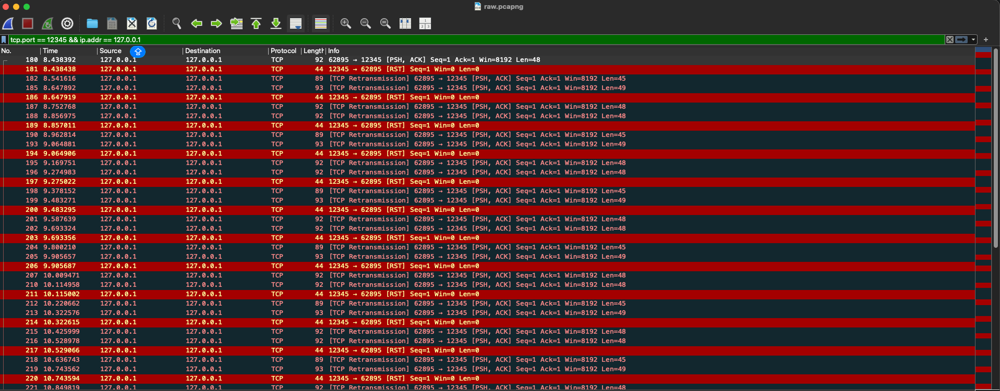
דפוס התעבורה הנצפה:
ניתן להבחין בדפוס שחוזר על עצמו בכל התעבורה:
הסבר על הדפוס והסיבה להופעת RST ב-Localhost:
הדפוס הנצפה מראה תהליך ברור: הלקוח (62895) שולח חבילות עם נתונים (PSH, ACK) לשרת (12345), אך השרת משיב עם חבילות RST (Reset) במקום ACK תקין.
מדוע זה קורה ב-Localhost?
זהו התנהגות תקינה: התנהגות זו היא תקינה לחלוטין ומצביעה על כך שהחבילות אכן נוצרות ונשלחות דרך מחסנית הרשת של מערכת ההפעלה. מטרת הפרויקט היא להדגים את תהליך האריזה (Encapsulation) והשידור של חבילות TCP/IP, ולא לנהל שיחה אמיתית עם שרת פעיל. לכן, הופעת ה-RST היא הוכחה לכך שהחבילות אכן נשלחו ונקלטו על ידי מערכת ההפעלה, והתגובה של RST היא התגובה התקנית של מערכת ההפעלה לחבילות שלא שייכות לחיבור קיים.
פרטים טכניים: כל החבילות עוברות דרך Loopback (127.0.0.1), גדלי החבילות משתנים (44-93 בתים), ומספר החבילות שנלכדו מתאים למספר ההודעות בקובץ ה-CSV (41 הודעות).
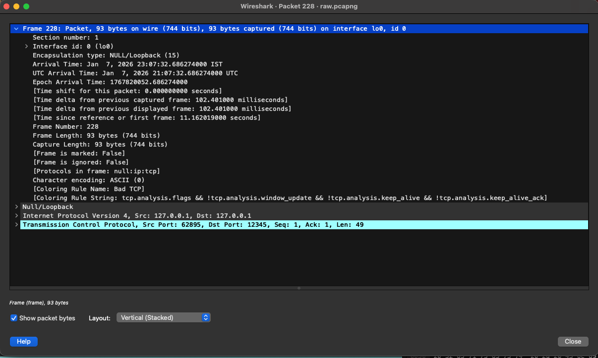
בצילום המסך מוצגת חבילת רשת (Frame 228, 93 בתים) שנלכדה על ממשק Loopback (lo0). החבילה מדגימה את תהליך האריזה: Null/Loopback → IP → TCP, המעבר משכבת הקישור ועד שכבת התעבורה. הסימון "Bad TCP" מציין ש-Wireshark זיהה תכונות חריגות (כגון retransmission) כתוצאה מכך שאין שרת פעיל המאזין על הפורט.
בצילום המסך מוצגת שכבת הרשת (IPv4) של החבילה. כתובות המקור והיעד הן 127.0.0.1 (Loopback), מה שמעיד על תעבורה פנימית. כותרת ה-IP כוללת: Version 4, Header Length 20 בתים, Protocol TCP (6). כותרת ה-IP עוטפת את כותרת ה-TCP ואת הנתונים ומעבירה אותם דרך ממשק ה-Loopback.
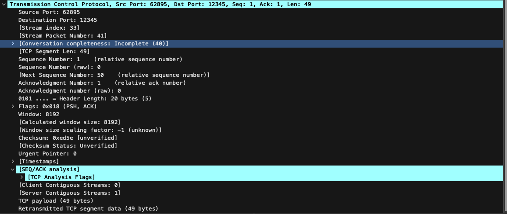
בצילום המסך מוצגת שכבת התעבורה (TCP) של חבילה 228. החבילה נשלחת מפורט 62895 לפורט 12345, וכוללת 49 בתים של payload (הודעת DHCP מקובץ ה-CSV). פרטים עיקריים: Sequence Number 1, Acknowledgment Number 1, Flags PSH+ACK, Window Size 8192, Header Length 20 בתים. החבילה היא חלק מזרם TCP (Stream 33) ולא הושלמה במלואה (Conversation Incomplete) כתוצאה מאי-קיום שרת פעיל. הסימון "Retransmitted TCP segment" מציין שהחבילה נשלחה מחדש עקב חוסר אישור מהשרת.
כל חבילת TCP שנלכדה מייצגת הודעת DHCP אחת מתוך קובץ ה־CSV. ניתן לקשר בין שורות כגון msg_id, תוכן ההודעה (message) והזמן היחסי (timestamp) לבין החבילות שנצפו ב־Wireshark, ובכך לעקוב אחר תהליך העברת המידע משכבת היישום ועד לרשת.
בחלק זה מימשנו מערכת צ'אט מבוססת תקשורת TCP במודל Client–Server. המערכת מאפשרת למספר לקוחות להתחבר לשרת בו־זמנית, להזדהות באמצעות שם משתמש ייחודי, ולשלוח הודעות טקסט ללקוחות אחרים בזמן אמת. התקשורת בין הלקוחות לשרת מתבצעת באמצעות sockets רגילים בלבד, ללא שימוש ב-frameworks או ספריות חיצוניות. השרת אחראי לניהול החיבורים, לניתוב ההודעות בין הלקוחות ולטיפול בניתוקים.
המערכת בנויה משני רכיבים עיקריים:
התקשורת מתבצעת בפרוטוקול TCP, המבטיח אמינות, סדר והגעה מלאה של ההודעות.
השרת נפתח עם socket אחד המוגדר להאזנה (listen). כל חיבור חדש מתקבל באמצעות accept, אשר יוצר socket ייעודי ללקוח המחובר. לכל לקוח נוצר thread נפרד, כך שהשרת יכול לטפל במספר לקוחות במקביל.
השרת שומר:
השרת תומך ב:
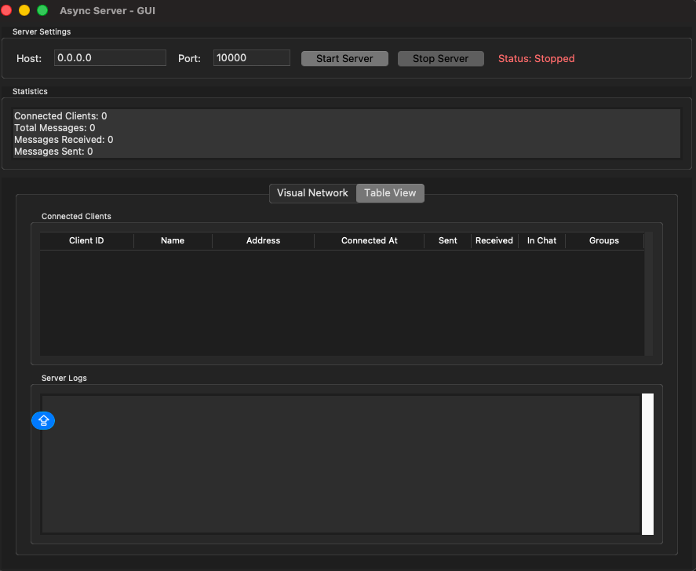
המערכת כוללת ממשק גרפי מתקדם (tkinter) לניהול השרת עם ניטור בזמן אמת. הממשק כולל: הגדרות שרת (Host, Port, כפתורי Start/Stop), פאנל סטטיסטיקות (מספר לקוחות, הודעות), טבלת לקוחות מחוברים (פרטי חיבור, סטטיסטיקות, סטטוס צ'אט, קבוצות), ואזור לוגים עם אפשרויות ייצוא.
תצוגת רשת ויזואלית (Visual Network):
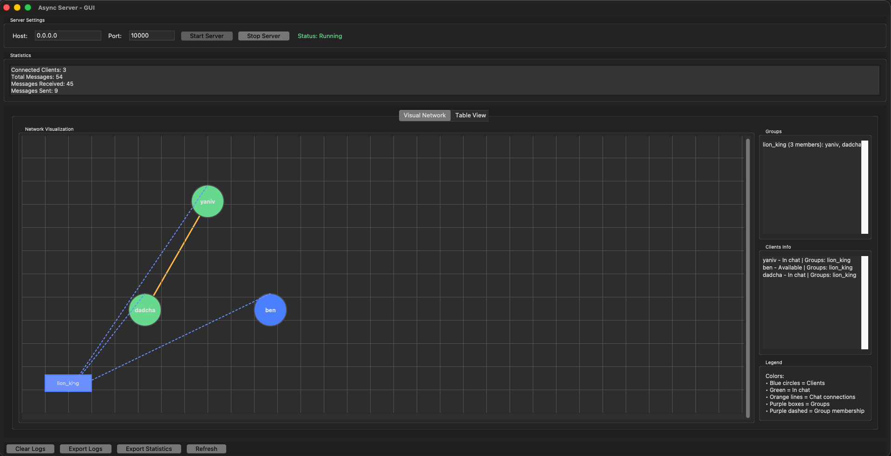
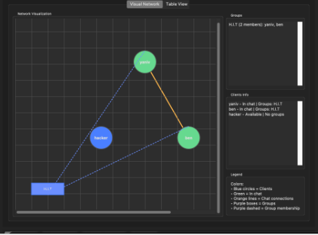
הממשק כולל תצוגה ויזואלית מתקדמת של טופולוגיית הרשת: צמתים עגולים ללקוחות (ירוק = בצ'אט פעיל, כחול = זמין), תיבות מלבניות סגולות לקבוצות, קווים כתומים לחיבורי צ'אט, וקווים מקווקווים סגולים לחברות בקבוצות. נוסף על כך יש פאנלי מידע: רשימת קבוצות עם חברים, רשימת לקוחות עם סטטוס, ומקרא. התצוגה מתעדכנת בזמן אמת ומאפשרת ניהול נוח של כל הפעילות במערכת.
הלקוח מתחבר לשרת באמצעות TCP socket ומזדהה בשם משתמש. בקובץ הלקוח קיימים שני threads:
מבנה זה מאפשר קבלת הודעות בזמן אמת, גם בזמן שהמשתמש מקליד.
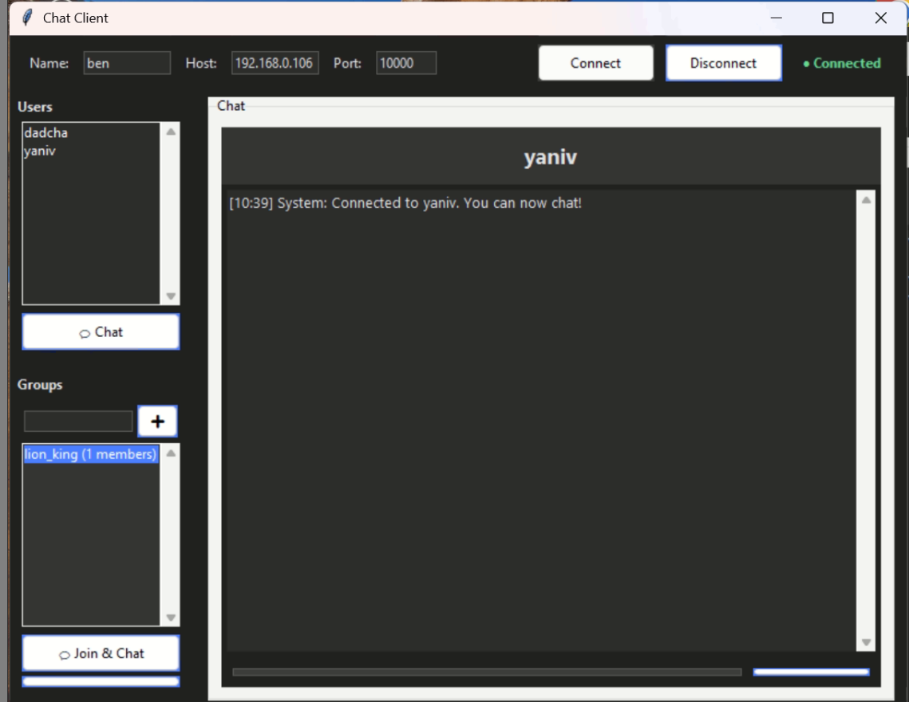
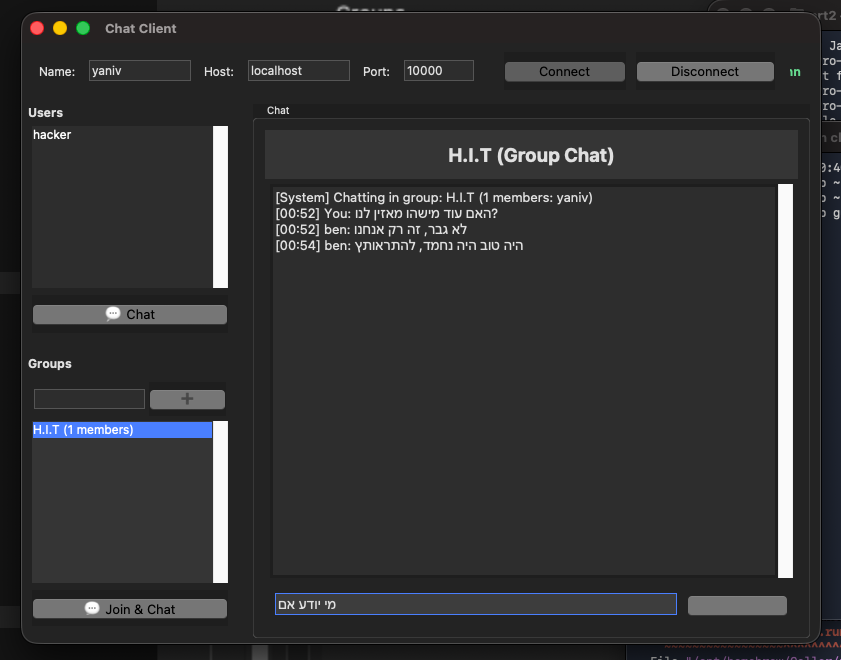
המערכת כוללת ממשק גרפי מתקדם (tkinter) ללקוח, המאפשר חיבור לשרת וניהול צ'אטים פרטיים וקבוצתיים. הממשק מחולק לשלושה חלקים: פאנל עליון להגדרות חיבור (שם, כתובת, פורט, כפתורי Connect/Disconnect, סטטוס חיבור), פאנל שמאלי עם רשימת משתמשים (כפתור Chat לפתיחת צ'אט פרטי) ורשימת קבוצות (יצירה והצטרפות), ופאנל ימני עם אזור הצ'אט (היסטוריית הודעות עם זמן ושולח, ושדה קלט להקלדת הודעות). הממשק מתעדכן בזמן אמת ומאפשר חוויית שימוש נוחה.
python3 במקום pythonpython prt2/gui/server_gui.pypython3 prt2/gui/server_gui.pyלאחר ההרצה, יפתח חלון GUI של השרת. לחיצה על כפתור "Start Server" תפעיל את השרת, והוא יתחיל להאזין לחיבורים נכנסים על הפורט המוגדר (ברירת מחדל: 10000).
python prt2/gui/client_gui.pypython3 prt2/gui/client_gui.pyהערות נוספות:
server.py ו-client.py בתיקיית prt2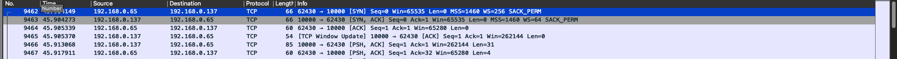
בצילום המסך מוצגת התחלת השרת והחיבור הראשון של לקוח. השרת מאזין על כתובת 0.0.0.0 (כל הממשקים) ופורט 10000, כפי שניתן לראות בהודעת ההתחלה: "Server listen in: 0.0.0.0:10000".
כאשר לקוח מתחבר, השרת מקבל את החיבור ומציג:
השרת שולח הודעת "welcome" ללקוח המחובר, ומתחיל thread נפרד לטיפול בכל לקוח, מה שמאפשר טיפול במספר לקוחות במקביל.
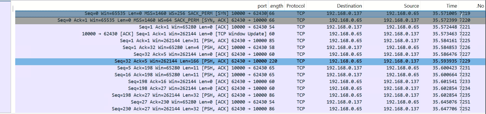
בצילום המסך מוצגת התחלת הלקוח והחיבור לשרת. הלקוח מתחבר לכתובת השרת (192.168.0.106) ופורט 10000, כפי שניתן לראות בממשק הגרפי:
לאחר החיבור, הלקוח מקבל הודעת welcome מהשרת, והממשק מציג את רשימת המשתמשים המחוברים ואת הקבוצות הזמינות.
בצילום המסך מ-Wireshark ניתן לראות את תהליך הקמת החיבור TCP (Three-Way Handshake) בין הלקוח לשרת:
ממצאים: תהליך ה-Three-Way Handshake הושלם בהצלחה. שני הצדדים משתמשים ב-TCP Options (MSS, Window Scale, SACK). החלון ההתחלתי הוא 65535, ולאחר ה-Handshake השרת שולח Window Update ומגדיל את החלון ל-262144. לאחר הקמת החיבור מתחילה העברת נתונים (השרת שולח welcome, הלקוח שולח את שם המשתמש).
לצורך ניתוח תעבורת הרשת של מערכת הצ'אט, בוצעה לכידת תעבורה באמצעות תוכנת Wireshark במהלך הרצת השרת והקליינטים. הלכידה בוצעה על ממשק הרשת המקומי, מאחר והשרת והלקוחות פועלים ברשת מקומית. לאחר סיום הלכידה בוצע סינון לפי הפורט של השרת (tcp.port == 10000) על מנת להתמקד אך ורק בתעבורת היישום.
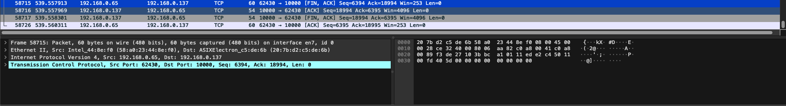
בצילום המסך מוצג ניתוח מפורט של חבילת FIN שנשלחה מהלקוח לשרת (Packet 58715). החבילה מדגימה את כל שכבות מודל TCP/IP - Ethernet עם כתובות MAC, IPv4, ו-TCP עם דגלי FIN+ACK. רצף החבילות מציג את תהליך ה-Four-Way Handshake: FIN מהלקוח → ACK מהשרת → FIN מהשרת → ACK מהלקוח. בהשוואה לתמונה הקודמת, כאן הלקוח יוזם את הניתוק במקום השרת, אך התהליך זהה - סיום חיבור נקי ומסודר המבטיח שכל הצדדים מודעים לסגירת החיבור.
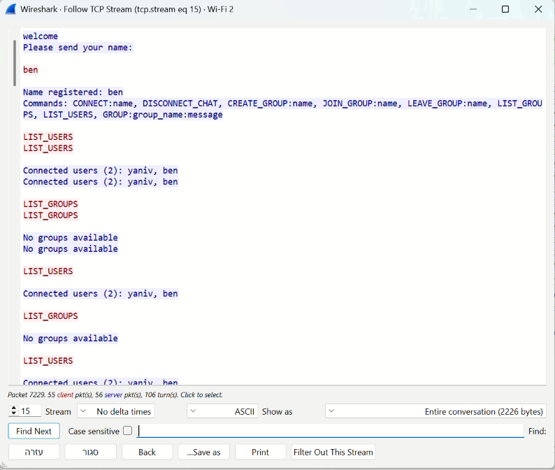
בצילום המסך מוצגת תעבורת השרת בפועל כפי שנלכדה ב-Wireshark באמצעות תכונת "Follow TCP Stream" (Stream 15). התמונה חושפת את כל התקשורת המתרחשת מאחורי הקלעים של ממשק ה-GUI, ומדגימה איך כל פעולה גרפית מתורגמת לפקודות טקסטואליות הנשלחות לשרת.
תהליך החיבור והרשמה:
איך ממשק ה-GUI עובד מאחורי הקלעים:
כל פעולה בממשק הגרפי מתורגמת אוטומטית לפקודת טקסט הנשלחת לשרת דרך החיבור TCP. כאשר המשתמש לוחץ על כפתור או מבצע פעולה בממשק, הקוד של הלקוח:
עדכונים אוטומטיים ברקע - בדיקות תקופתיות:
כפי שניתן לראות בתעבורה, המערכת מריצה ברקע בדיקות תקופתיות אוטומטיות על מנת להבטיח שהמידע בממשק הגרפי תמיד מעודכן ונכון:
סטטיסטיקות התעבורה:
בתחתית צילום המסך ניתן לראות את סטטיסטיקות הזרם:
תובנות חשובות:
סיכום: הצילום מדגים איך כל פעולה בממשק הגרפי מתורגמת לפקודה טקסטואלית הנשלחת לשרת, ואיך המערכת מבצעת בדיקות אוטומטיות תקופתיות על מנת להבטיח שהמידע בממשק תמיד מעודכן ומדויק. זה מאפשר חוויית משתמש נוחה בממשק הגרפי, תוך שמירה על תקשורת ברורה ואמינה עם השרת ברמת הפרוטוקול.
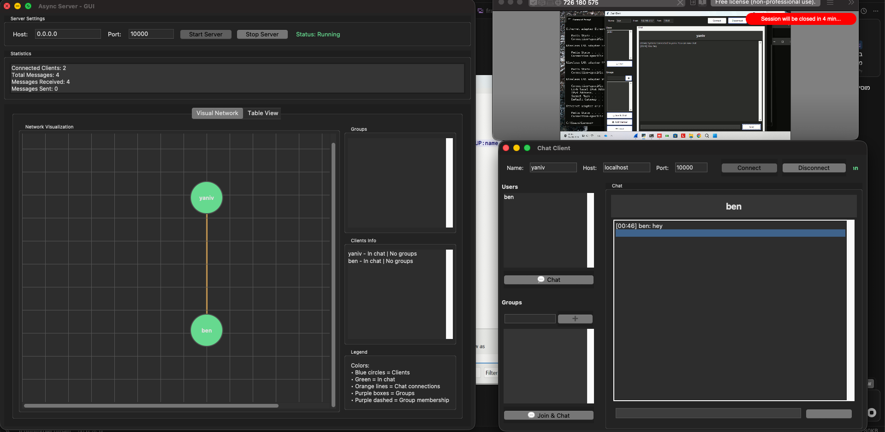
בצילום המסך מוצגת המערכת במצב תפעולי מלא, עם שרת פעיל ושני לקוחות המחוברים מרשת LAN: מחשב מקומי (localhost) ומחשב מרוחק. הצילום מדגים את כל שכבות המודל TCP/IP בפעולה - מתקשורת בין מחשבים ברשת המקומית ועד העברת הודעות צ'אט בזמן אמת.
מבנה הרשת: השרת (0.0.0.0:10000, Status: Running) עם 2 לקוחות מחוברים. לקוח מקומי yaniv (localhost) ולקוח מרוחק ben (192.168.0.x) מנהלים צ'אט דרך השרת, המדגים תקשורת בין מחשבים ברשת LAN.
שכבות TCP/IP בפעולה: הצילום מדגים את כל שכבות המודל - שכבת היישום (הודעות צ'אט ופקודות), שכבת התעבורה (TCP עם Three-Way Handshake וחיבורים מרובים), שכבת הרשת (IP עם ניתוב בין כתובות שונות), ושכבת הקישור (Ethernet/Wi-Fi ברשת LAN). תהליך העברת הודעה: ben מקליד "hey" → ההודעה נשלחת דרך TCP/IP לשרת → השרת מנתב ל-yaniv → yaniv מקבל ומציג את ההודעה בממשק.
ממצאים עיקריים מהצילום:
ויזואליזציה של הרשת:
בממשק השרת ניתן לראות את הויזואליזציה של הרשת:
סיכום: הצילום מדגים את המערכת בפעולה מלאה - שרת פעיל, שני לקוחות מחוברים (מקומי ומרוחק), ותקשורת בזמן אמת בין הלקוחות דרך השרת. התקשורת עוברת דרך כל שכבות מודל TCP/IP - משכבת היישום (הודעות צ'אט) דרך שכבת התעבורה (TCP) ושכבת הרשת (IP) ועד שכבת הקישור (LAN). זה מוכיח שהמערכת פועלת כמצופה ומקיימת תקשורת אמינה בין מחשבים שונים ברשת המקומית.
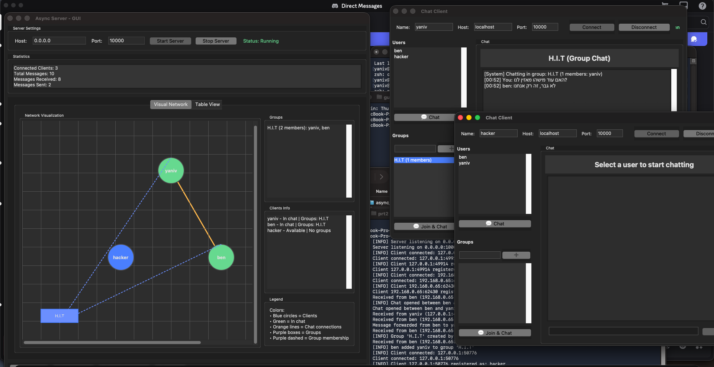
בצילום המסך מוצג תרחיש של קבוצה מאובטחת עם שלושה לקוחות: yaniv ו-ben (חברים בקבוצה "H.I.T" ונמצאים בצ'אט פעיל) ו-hacker (פורץ פוטנציאלי שלא חבר בקבוצה).
מנגנון האבטחה: המערכת מבוססת על ניהול הרשאות ברמת השרת. השרת מנהל רשימת חברים לכל קבוצה ומאפשר רק לחברים מורשים לראות ולשלוח הודעות. פורץ פוטנציאלי יכול לראות שיש קבוצה ומשתמשים מחוברים, אבל לא יכול לראות את תוכן ההודעות או להיכנס לקבוצה ללא הזמנה. השרת בודק הרשאות לפני כל פעולה (שליחת/קבלת הודעות) ומגביל גישה רק לחברים בקבוצה.
מגבלות האבטחה: המערכת מספקת אבטחה ברמת יישום עם ניהול הרשאות, אבל ההודעות נשלחות בטקסט פשוט (ללא הצפנה) וכל אחד יכול להזדהות בכל שם (ללא אימות זהות). אפשרויות לשדרוג: הצפנת הודעות (TLS/SSL), אימות זהות, והגנות מתקדמות נוספות.
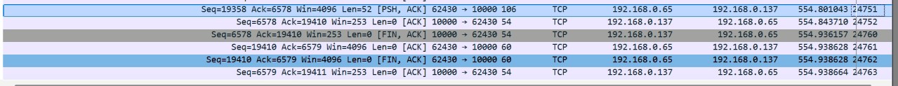
בצילום המסך מוצג תהליך סיום החיבור TCP (Connection Teardown) של הלקוח ben מהשרת. תהליך זה נקרא "Four-Way Handshake" ומתרחש כאשר אחד הצדדים (במקרה זה השרת) מבקש לסגור את החיבור, או כאשר הלקוח מנתק את החיבור.
ניתוח חבילות התעבורה:
בצילום ניתן לראות את תהליך ה-Four-Way Handshake לסיום החיבור: FIN מהשרת → ACK מהלקוח → FIN מהלקוח → ACK מהשרת. החבילות 24760-24763 מייצגות את תהליך הניתוק.
הסבר קצר על Four-Way Handshake: חיבור TCP הוא דו-כיווני, לכן צריך לסגור את שני הכיוונים - כל צד שולח FIN משלו והצד השני מאשר. זה מבטיח שכל הצדדים מודעים לסגירת החיבור ושכל הנתונים נשלחו ונקלטו לפני שהחיבור נסגר לחלוטין.
ממצאים עיקריים: התהליך מתבצע בצורה מסודרת עם אישורים בכל שלב. כל חבילות ה-FIN והאישורים אינן מכילות נתונים (Len=0), רק דגלי בקרה. הזמנים בין החבילות קצרים (מילישניות), מה שמעיד על רשת מקומית מהירה.
בצילום המסך מוצג ניתוח מפורט של חבילת FIN שנשלחה מהלקוח לשרת, כפי שנלכד ב-Wireshark. הצילום מאפשר לראות את כל שכבות המודל TCP/IP בפעולה - משכבת הקישור (Ethernet) ועד שכבת התעבורה (TCP).
ניתוח חבילת FIN (Packet 58715):
החבילה שנבחרה היא Packet 58715 - חבילת FIN+ACK שנשלחה מהלקוח (192.168.0.65:62430) לשרת (192.168.0.137:10000):
ניתוח שכבות TCP/IP: החבילה מדגימה את כל שכבות המודל - Ethernet עם כתובות MAC (Source: 58:20:23:44:8e:f0, Destination: 20:7b:d2:c5:de:6b), IPv4 (Source: 192.168.0.65, Destination: 192.168.0.137), ו-TCP (פורטים 62430→10000, דגלי FIN+ACK). גודל החבילה 60 בתים (מינימלי), ללא payload.
רצף החבילות בתהליך Four-Way Handshake: FIN מהלקוח → ACK מהשרת → FIN מהשרת → ACK מהלקוח, מה שסוגר את החיבור במלואו. בהשוואה לתמונה הקודמת, כאן הלקוח יוזם את הניתוק במקום השרת, אך התהליך זהה.
סיכום: הצילום מדגים את כל שכבות מודל TCP/IP בפעולה - משכבת הקישור (Ethernet עם כתובות MAC) דרך שכבת הרשת (IP עם כתובות IP) ועד שכבת התעבורה (TCP עם פורטים ודגלים). החבילה מדגימה תהליך סיום חיבור נקי ומסודר, כאשר הלקוח יוזם את הניתוק והשרת מגיב בהתאם. זה מוכיח שהמערכת מטפלת נכון בניתוקים יזומים מכל צד, ושומרת על אמינות הפרוטוקול TCP גם בסיום החיבור.
במהלך העבודה על הפרויקט נעשה שימוש מוגבל ומבוקר בבינה מלאכותית, בהתאם להנחיות הקורס.
השימוש בבינה מלאכותית נעשה לצרכים הבאים:
הבינה המלאכותית לא שימשה לכתיבת קוד מלא, לא לביצוע הלכידה עצמה, ולא לניתוח אוטומטי של תעבורת הרשת.
הפרויקט הציג יישום מלא של תקשורת TCP/IP בשני חלקים עיקריים:
הפרויקט מספק הבנה מעמיקה של מודל TCP/IP, תהליך האריזה, תכנות תקשורת, וטכנולוגיות מתקדמות כמו תכנות אסינכרוני וממשקים גרפיים. כל הדרישות מולאו בהצלחה, והקוד הוא מקצועי, מתועד היטב, ומוכן לשימוש.